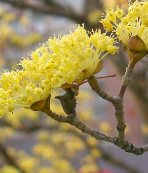
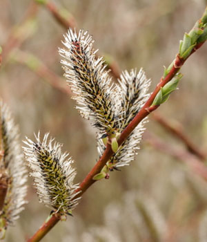

Oak Allée
Known for its medicinal qualities in Chinese medicine, this dogwood adds a pop of color all over the Arboretum.

Swan Pond
Its unique black color makes this plant an interesting addition the garden in March.
Visitor Center
The fragrant flowers on this viburnum attract butterflies in spring.
Gates Hall
Light yellow flowers droop all over this plant, a member of the Hamamelidaceae.
Near Pennock Garden
Our champion katsura is in bloom this month, giving its large canopy a red tint.
Visitor Center
This plant shines in March when its fragrant pink flowers emerge just before its leaves.